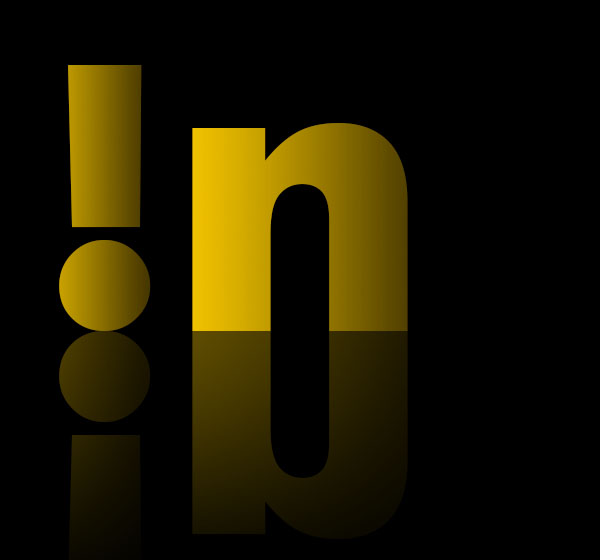

Be familiar with factorial and subfactorial
SUBFACTORIAL

Info for '!n'
Subfactorial is noun, also called the derangement number. In mathematics it is the number of permutations of n
elements in which no elements appears in its natural place of sets after derangements.
For each n elements of sets when is:

Subfactorial is obtained by the formula :
The field of application is in statistics and combinatorics.
Example. For set of 2 elements {1,2} derangement (subfactorial) is just one kombination like {2,1}.
This means that the element of the starting set will never be in its place.
For set of 3 elements {r,g,b} result is just 2 kombinations: {g,b,r} and {b,r,g}.
Try the others.